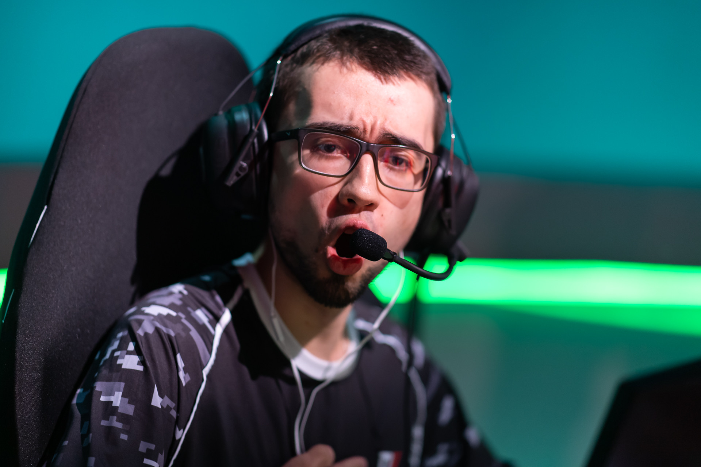

Valorant: Sharks anuncia contratação de frz
Leandro "frz" é o novo reforço do time de Valorant da Sharks. Semanas depois de deixar a Vikings, o jogador se acertou com a nova equipe de ocupará uma das três vagas livres na escalação titular dos Tubarões, que tem vaga garantida na Fase 1 do Valorant Challengers Brazil.
Ex-jogador profissional de Paladins, frz teve um grande ano em 2021, ajudando a Vikings a vencer o Masters regional e classificando a equipe para o Masters Reykjavík e para o Champions. Ao final da temporada, porém, os jogadores optaram por seguir caminhos distintos e não renovaram com a VKS.
Na Sharks, frz terá a companhia de Gabriel "gaabxx" e Wallacy "prozin", únicos remanescentes da equipe que também disputou o mundialito na Islândia. Nos últimos dois meses, Matheus "fra", Matheus "DeNaro" e Winicius "light" deixaram os Tubarões.
A Sharks é uma das seis equipes com vaga garantida na primeira etapa do Challengers Brazil. Ao lado de Vikings, Vivo Keyd, FURIA, Liberty e Gamelanders Blue, a equipe aguarda pelos quatro classificados para definir os representantes do Brasil no primeiro torneio internacional de 2022.